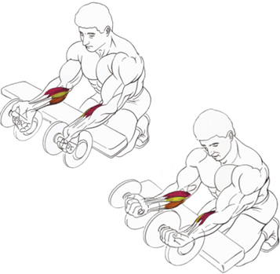

<>

Это упражнение, служит для укрепления хвата и развития мускулатуры предплечий.
Исходное положение:
Положите две гантели на горизонтальную скамью.
Опуститесь на колени, лицом к скамье.
Возьмите обе гантели супинированным хватом (ладонями вверх), предплечья положите на скамью. Кисти рук должны свисать с края скамьи.
Техника выполнения:
На выдохе поднимите кисти рук.
На вдохе медленно вернитесь в исходное положение.
Рекомендации:
Предплечья должны оставаться неподвижными, упражнения выполняется только движением кистей рук.
Не отрывайте локти и предплечья от скамьи. Как только это происходит, то львиная доля нагрузки тут же смещается с мышц предплечья на бицепс.